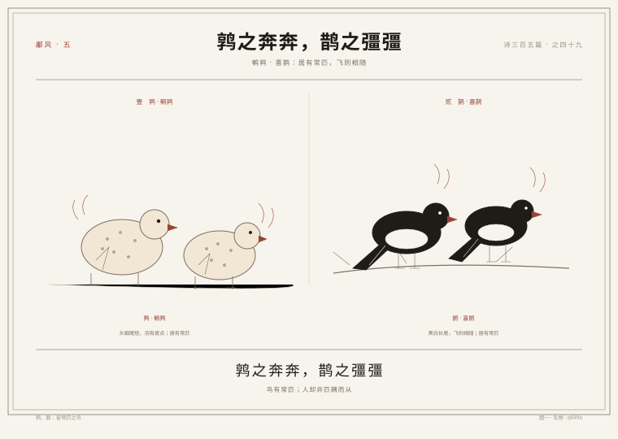
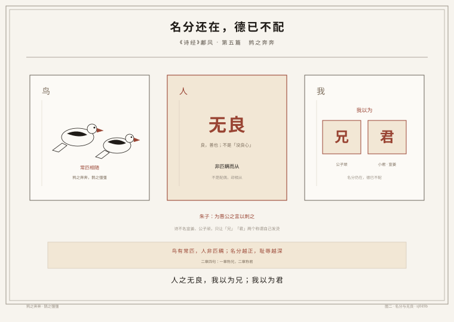

第四十九篇 鹑之奔奔
鄘风 · 之五 SJ049
朗读 · 普通话
依经文正文朗读，句读从文；不配乐、不改速、不加拖腔。全库同一音色（豆包 TTS），非播音员录制。
一 解题
诗三判：
- 谁在说：一个以惠公口吻说话的人。朱子说「为惠公之言以刺之」；他称公子顽为「兄」，称宣姜为「君」（小君），却看着这两人做出鹑鹊不如的事。
- 说什么事：鹑鹊尚有常匹，飞则相随；公子顽与宣姜非匹耦而从。「我」仍以兄、以君相称：名分还在，德行已坏。
- 为何编在此：鄘风第五篇。前四篇由守、讳、刺到桑间；此篇把「桑间」落到具体两个人：兄与君。由国俗回到宫室，且是最难堪的一层：母、兄、小君，三重名分都还在。
《毛序》：「《鹑之奔奔》，刺卫宣姜也。卫人以为宣姜鹑鹊之不若也。」
朱子《诗集传》：「卫人刺宣姜与顽，非匹耦而从也。故为惠公之言以刺之。」
本库的看法：这首诗的狠处，不在骂「淫」，在「我以为兄、我以为君」两句。
名分还在，人已不堪；鸟尚有常匹，人却以兄、以君之名行非匹之事。诗不呼名，只让「兄」与「君」两个称谓自己发烫。
二 经文
第一章
鶉之奔奔，鵲之彊彊。人之無良，我以為兄。
第二章
鵲之彊彊，鶉之奔奔。人之無良，我以為君。
分章：二章，章四句。
章末韵：
- 一章：彊、良、兄（阳部）；奔（文部，不入）。
- 二章：彊、良（阳部）；奔、君（文部）；交叶。
三 韵读
| 一 |
彊、良、兄 |
阳部（奔 文部，不入） |
| 二 |
彊、良；奔、君 |
阳部／文部交叶 |
一章「奔」文部，不与阳部相叶；二章「彊、良」阳部，「奔、君」文部，交叶。二章以「奔」换「君」，韵随义转：前章收在「兄」，后章收在「君」。
四 字义与名物
字义
- 鹑（chún）——鹌鹑，头细尾短，羽有斑点。
- 鹊——喜鹊，黑白长尾。
- 奔奔——跳跃奔走、相随之貌；一说飞貌。
- 彊彊（jiāng）——翩翩飞翔、相随之貌；一读
qiáng。
- 无良——不善。良，善也；不是「没良心」。
- 我——惠公自谓；一说「何」之借字。
- 以为——以之为，仍以……相称。
- 兄——兄、庶兄；指公子顽。
- 君——小君、夫人；指宣姜。不是国君。
名物
- 鹑 /
鹊——两种常匹之鸟：居有常匹，飞则相随；在此作反衬，不是「淫鸟」标签。
- 兄 /
君——两个名分：兄指公子顽，君指小君宣姜；名分越正，丑事越重。
五 今译
第一章
鹌鹑奔走相随，喜鹊飞翔相随。这个人不善，我仍以兄相称。
第二章
喜鹊飞翔相随，鹌鹑奔走相随。这个人不善，我仍以君相称。
译注：「我」是惠公的口吻；「兄」指公子顽；「君」是小君，指宣姜；「以为」译「仍以……相称」，不译「认错人」。
六 章旨
一章：以鹑鹊常匹反衬。
「我以为兄」一句，把公子顽的「兄」名压上去；鸟尚相随，人却非匹。
二章：以鹊鹑倒置再衬。
「我以为君」一句，把宣姜的「小君」名压上去；名分越正，耻辱越深。
二章合看：鸟有常匹，人无良。
一章称兄，二章称君；两个称谓，两记重手。
七 诗教
- 兴：鹑鹊起兴，以常匹反衬非匹；兴而兼比。鸟之相随，照人之非耦。
- 观：可观名与实的裂缝。兄、君是名分，无良是实；名分不能洗掉行为，反而使行为更重。
- 群：可与「不得不叫某人兄、君，却知道他不配」的人同群；也可与「用名分遮丑」的群体同群。
- 怨：怨在「我以为」三字。不是骂，是承认；承认越重，刺越深。
八 分寸与边界
- 不可把「我以为兄、我以为君」读成「我认错人」。名分仍在，德已不配；这是承认，不是误认。
- 不可把「君」解作国君。此处是「小君」，指宣姜、夫人；解作国君，全篇错位。
- 不可把鹑鹊当单纯鸟名。它们是「常匹」的反衬；也不是「淫鸟」的标签。
- 不可把「刺宣姜」只当骂女性。朱子说「刺宣姜与顽」，二人并刺；旧说也有刺宣公，存疑。
- 不可把「无良」译成「没良心」。良是善，指德行；译成今语，刺便轻了。
九 存疑
- 诗旨与旧说：毛序主刺宣姜；朱子说「刺宣姜与顽，为惠公之言」；三家诗或说刺宣公。本库从朱子「惠公之言」读，旧说两存。
- 文字异文：「彊彊」或作「强强」「畺畺」；「奔奔」或作「贲贲」；「我以为兄」的「我」，或读「何」之借字。今从毛诗。
- 名物歧解：「奔奔、彊彊」，毛传无解；郑氏谓「争斗恶貌」，韩诗谓「乘匹之貌」，朱子谓「非匹耦而相从」。今取「居有常匹，飞则相随」。
- 年代与作者：诗无作者。旧说系卫宣姜、公子顽；事在卫惠公初年，诗未必即成于其时。「为惠公之言」是代言之体，不必是惠公亲作。
- 编次之疑：为何次《桑中》？由「桑间」之国俗落到具体宫室二人，由一般到具体；也可能因宣姜组诗类聚。《鄘风》篇次未必有严密义例。
十 跨典
- 《鄘风·墙有茨》：同写宣姜、公子顽，前篇以「不可道」讳之，此篇以「兄、君」刺之。讳是守住口，刺是点出名分；两篇对读，才见「不可道」后面站着谁。
- 《鄘风·君子偕老》：同写宣姜，前篇以盛装照「不淑」，此篇以短句照「无良」。一长一短，一美一刺，都是把名分与德行放在一处照。
- 《鄘风·桑中》：前篇写「桑间」之风，此篇把风落到宫室里的两个人。由国俗到具体，由「不可止」到「不可言」。
- 《左传·闵公二年》：齐人使昭伯（公子顽）烝于宣姜，不可，强之。旧说以为此诗本事；诗不名，只称「兄」「君」。
- 《礼记·昏义》：婚礼「合卺而酳」，所以成夫妇之义；鹑鹊常匹，正是夫妇之义的物象。此篇写「非匹耦而从」，是把婚礼之义翻过来照。
- 《邶风·新台》：卫宣公纳宣姜，是新台之耻；此篇写宣姜与公子顽，是鹑奔之刺。一在娶，一在婚后；一讥「籧篨」，一称「兄、君」。
十一 双卡与图
双卡五对：
| 我以为兄（名分仍在） |
我认他作兄（误读） |
| 我以为君（小君、夫人） |
我以为国君（错位） |
| 鹑鹊常匹（反衬） |
鹑鹊淫鸟（标签） |
| 无良（德不善） |
没良心（今语） |
| 刺宣姜与顽（二人并刺） |
只骂宣姜（偏） |

图一 · 鹑、鹊：居有常匹 名物图

图二 · 名分还在，德已不配 义理图
读图三处：
- 两对鸟：图一左画鹌鹑一对，右画喜鹊一对；都有「常匹相随」的动势。鸟愈守匹，人愈失匹。
- 一句反衬：图一底下写「鸟有常匹；人却非匹耦而从」，这不是纯鸟图，是把鸟的常匹当作人的镜子。
- 名分与无良：图二分「鸟、人、我」三栏；「我」栏下并置「兄」「君」，注明公子顽、小君宣姜。名分越正，耻辱越深。